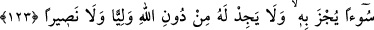

ÎMAN EDİP
SÂLİH AMEL İŞLEYENLER
122- Îman eden ve iyi işler yapanları, içinde ebedî kalmak üzere, zemîninden
ırmaklar akan cennetlere koyacağız. Allah, (bu söylenenleri) hak bir söz olarak
vâdetti. Söz verme ve onu tutma bakımından kim Allah’tan daha doğru olabilir?
123- Ne sizin kuruntularınız ne de ehl-i kitâbın kuruntuları (gerçektir); kim bir
kötülük yaparsa onun cezâsını görür ve kendisi için Allah’tan başka dost da,
yardımcı da bulamaz.
124- Erkek olsun, kadın olsun, her kim de mü’min olarak iyi işler yaparsa, işte
onlar cennete girerler ve zerre kadar haksızlığa uğratılmazlar.
125- İşlerini en iyi yapan kimse olarak kendini Allah’a veren ve İbrâhim’in,
Allah’ı bir tanıyan dînine tâbi olan kimseden dince daha güzel kim vardır? Allah
İbrâhim’i dost edinmiştir.
126- Göklerde ve yerde olanların hepsi Allah’ındır ve Allah her şeyi kuşatmıştır.
“Îman eden ve iyi işler yapanları,” İşlerin salâhı, yâni iyi olması onların
samîmiyetle yapılmasıyladır. Sâlih amel ise kendisiyle Allah’ın rızâsı kastedilen
ameldir. Çeşitleri çok olup namaz, zekât ve diğer güzel ameller de bunun içerisine girer.
“içinde ebedî kalmak üzere,” yâni ilelebed kalacakları “zeminlerinden ırmaklar akan
cennetlere koyacağız.” Bu nehirlerden kasıt, su, süt, şarap ve bal nehirleridir.
Haddâdî şöyle demiştir: Allah Teâlâ’nın “Îman eden ve iyi işler yapanlar” şeklinde
îmanın yanında tâati de zikredip ikisini cem etmesi, küfürle berâber tâatin fayda